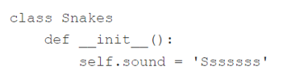
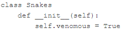

Мета:навчитися обробляти рядки за допомогою спеціальних функцій і методів.
Що ви будете вміти?
створювати класи та об’єкти у Python;
реалізувати механізми інкапсуляції та наслідування;
визначати власні винятки як клас і використовувати їх.
Основи об’єктно-орієнтованого програмування на Python
Приклад 1
В лекції 12 було показано, як розширити можливості Stack, визначивши новий клас (тобто підклас), який зберігає усі успадковані риси та додає деякі нові.
Ваше завдання – розширити поведінку класу Stack таким чином, щоб клас міг підраховувати всі елементи, що додаються і видаляються (ми припускаємо, що підрахунку видалень достатньо). Використовуйте клас Stack, який надано нижче.
Дотримуйтесь підказок:
додайте властивість, призначену для підрахунку операцій pop, і дайте йому ім’я, що гарантує його приховування;
ініціалізуйте його нулем усередині конструктора;
додайте метод, який повертає поточне значення, надане лічильнику (назвіть його get_counter()).
перевірте код
class Stack:def__init__(self):self.__stk = []def push(self, val):self.__stk.append(val)def pop(self): val =self.__stk[-1]delself.__stk[-1]return valclass CountingStack(Stack):def__init__(self): Stack.__init__(self)self.__count =0def get_counter(self):returnself.__countdef pop(self): val = Stack.pop(self)self.__count +=1return valstk = CountingStack()for i inrange(100): stk.push(i) stk.pop()print(stk.get_counter())
100
# Завдання 1class Stack:def__init__(self):self.items = []def push(self, item):self.items.append(item)def pop(self):ifnotself.is_empty():returnself.items.pop()else:raiseIndexError("pop from empty stack")def is_empty(self):returnlen(self.items) ==0class CountingStack(Stack):def__init__(self):super().__init__()self.pop_count =0# Переменная для подсчета pop операцийdef pop(self):ifnotself.is_empty():self.pop_count +=1# Увеличиваем счетчик на каждую операцию popreturnsuper().pop()else:raiseIndexError("pop from empty stack")def get_pop_count(self):returnself.pop_count# Тестированиеstack = CountingStack()for i inrange(100): stack.push(i) stack.pop()print(stack.get_pop_count()) # Ожидаемый результат: 100
100
Приклад 2
Як Ви вже знаєте, стек – це структура даних, що реалізує модель LIFO (Last In – First Out).
Черга -– це модель даних, що характеризується терміном FIFO: First In – Fist Out. Примітка: звичайна черга, відома Вам з магазинів або поштових відділень, працює так само - першим обслуговується покупець, який прийшов першим.
Ваше завдання -– реалізувати клас Queue з двома основними операціями:
put(element), яка поміщає елемент на кінець черги;
get(), яка бере елемент із початку черги і повертає його як результат (черга не може бути порожньою для успішного виконання).
Дотримуйтесь підказок:
використовуйте список як сховище (як і у випадку зі стеком);
put() повинен додавати елементи на початок списку, а get() повинен видаляти елементи з кінця списку;
визначте новий виняток із ім’ям QueueError (виберіть виняток для його створення) та викличте його, коли get() спробує працювати з порожнім списком.
Протестуйте код, використовуючи надані нами дані.
Очікуваний результат
1 dog False Queue error
class QueueError(Exception): # Choose base class for the new exception.passclass Queue:def__init__(self):self.list_queue = []def put(self, elem):self.list_queue.insert(0, elem)def get(self):ifnotlen(self.list_queue):raise QueueErrorelse: elem =self.list_queue.pop()return elem# Альтернативний варіант# def get(self):# if len(self.queue) > 0:# elem = self.queue[-1]# del self.queue[-1]# return elem# else:# raise QueueErrorque = Queue()que.put(1)que.put("dog")que.put(False)# print(que.get())try:for i inrange(4):print(que.get())except QueueError:print("Queue error")
1
dog
False
Queue error
Завдання 1
Ваше завдання –- трохи розширити можливості класу Queue (див. попередній приклад). Нам потрібен метод без параметрів, який повертає True, якщо черга порожня, і False інакше.
Доповніть код, який надано нижче. Запустіть його, щоб перевірити, чи дає він результат, аналогічний нашому.
# class QueueError(???):# pass# class Queue:# ## # Код из предыдущей лабораторной работы.# ## class SuperQueue(Queue):# ## # Напишите здесь новый код.# ## que = SuperQueue()# que.put(1)# que.put("dog")# que.put(False)# for i in range(4):# if not que.isempty():# print(que.get())# else:# print("Queue empty")
Очікуваний результат
1 dog False Queue empty
# Завдання 1class Queue:def__init__(self):self.items = []def put(self, item):self.items.append(item)def get(self):ifself.items:returnself.items.pop(0)else:raise QueueError("Queue is empty")def size(self):returnlen(self.items)class SuperQueue(Queue):def isempty(self):returnlen(self.items) ==0# Тестування кодуque = SuperQueue()que.put(1)que.put("dog")que.put(False)for i inrange(4):ifnot que.isempty():print(que.get())else:print("Queue empty")
1
dog
False
Queue empty
Завдання для самостіної роботи
Виконати приклади 1, 2 і завдання 1, наведені вище у цьому зошиті.
Створити файл lab_11_StudentLastName.py з написаним кодом.
Закомітити файл у локальний репозиторій.
Відправити (“запушити”) поточну версію Git-проєкта у віддалений репозиторій на GitHub.
Звіт має складатися з файлу (за основу взяти цей Python-зошит) lab_11_StudentLastName.ipynb. (Можливі якісь додакові файли)
Контрольні запитання
У наступному оголошенні чогось не вистачає – чого? 
Припускаючи, що існує клас з ім’ям Snake, напишіть перший рядок оголошення класу Python, вказавши, що новий клас насправді є підкласом Snake.
Змініть код, щоб гарантувати, що властивість venomous є приватною. 
В оголошенні чогось не вистачаon
class Snakes: def init(self): self.so’sssssss’und = s Відповідь: Не вистачає двокрапки в оголошенні класу і self у методі init.
Припускаючи, що існує клас з іменем Snake, напишіть перший рядок оголошення класу Python, вказавши, що новий клас насправді є підp ython class Snakes(Snake): def __init__(self): see True
Змініть код, щоб гарантувати, що власт.
class Snakes(Snake):def__init__(self): selnomous =True